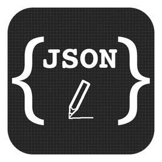

JSON 指的是 JavaScript 对象表示法（JavaScript Object Notation）
是轻量级的文本数据交换格式，JSON 比 XML 更小、更快，更易解析。
JSON 语法是 JavaScript 对象表示语法的子集。
JSON 值可以是：字符串, 数字, 对象, 数组, 布尔值 或 null
JavaScript 的值可以是：JSON 数据类型，也可以是 JavaScript 的表达式，包括函数，日期，及 undefined
（1）JSON.parse()
需求：JSON 通常用于与服务端交换数据，在接收服务器数据时一般是字符串
作用：将json格式的字符串转换为JavaScript对象
语法： JSON.parse(text[, reviver])
参数说明：
返回值：对象或数组
示例一：
var jsonStr = '{ "name":"runoob", "alexa":10000, "site":"www.runoob.com" }'; // json格式的字符串
var obj = JSON.parse(jsonStr); // JavaScript对象
document.write("name = " + obj.name);
document.write("name = " + obj[name]); // 第二种写法示例二：
1 var text = '{ "name":"Runoob", "initDate":"2013-12-14", "site":"www.runoob.com"}';
2 var obj = JSON.parse(text, function (key, value) { // 函数会遍历字符串中所有key和value，得到返回的value
3 if (key == "initDate") {
4 return new Date(value);
5 } else {
6 return value;
7 }});
8 document.write("创建日期：" + obj.initDate); // 输出，创建日期：Sat Dec 14 2013 08:00:00 GMT+0800 (中国标准时间)（2）JSON.stringify()
需求：JSON 通常用于与服务端交换数据，在向服务器发送数据时一般是字符串
作用：将JavaScript对象转换为json格式的字符串
语法： JSON.stringify(value[, replacer[, space]])
参数说明：
如果 replacer 是函数，则 JSON.stringify 将调用该函数，并传入每个成员的键和值。使用返回值而不是原始值。如果此函数返回 undefined，则排除成员。根对象的键是一个空字符串：""。
如果 replacer 是数组，则仅转换该数组中具有键值的成员。成员的转换顺序与键在数组中的顺序一样。当 value 参数也为数组时，将忽略 replacer 数组。（意思就是，对象或数组中key值如果在数组中存在，才保留。不存在的就去掉）
返回值：json格式的字符串
示例一：
var obj = { "name":"runoob", "initDate":new Date()， "alexa":10000};
var jsonStr= JSON.stringify(obj);
document.write(jsonStr); // 输出，{"name":"runoob","initDate":"2019-04-04T08:56:59.679Z","alexa":10000}实例二：
1 函数
2
3 var obj = { "name":"Runoob", "age":23, "site":"www.runoob.com"};
4 var jsonStr = JSON.stringify(obj, function(key,value){
5 if (key == "age") {
6 return 55;
7 }
8 return value;
9 }, '\t');
10 document.write(jsonStr); // 输出，{"name":"Runoob","age":55,"site":"www.runoob.com"}
11
12 数组
13
14 var obj = { "name":"Runoob", "age":23, "site":"www.runoob.com"};
15 var jsonStr = JSON.stringify(obj, [site,name], '\t'); // 保留数组中出现的对象的key值，按数组的顺序
16 document.write(jsonStr); // 输出，{"site":"www.runoob.com","name":"Runoob"}（3）eval()
作用：使用的是 JavaScript 编译器，可解析 JSON 文本，然后生成 JavaScript 对象。必须把文本包围在括号中，这样才能避免语法错误
语法： var obj = eval ("(" + txt + ")");
参数说明：
返回值：返回计算string的值，如果有的话 （没有则不做任何改变返回）
示例一：
// 表达式
eval("x=10;y=20;document.write(x*y)"); //output为200
document.write(eval("2+2")); //output为4
var x=10;
document.write(eval(x+17)); //output为27
// json格式字符串
7 var json = '{"name":"GDT","age":23,"University":"GDUT"}';
8 var info = eval('(' + json + ')'); //解析为JSON对象
9 document.write(info); //output为[object Object]alert(eval("{}")); // return undefined
alert(eval('('+'{}'+')')); // return object[Object] 另外，相对于写法格式严格的JSON.parse()来说，eval()可以解析任何字符串，eval是不安全的，因为eval比较宽松，会有潜在的安全性问题。比如以下代码：
var str1 = '{"a":"b"}';
document.write(eval("("+str1+")")); //正常解析为对象
var str2 = '{"a": (function(){alert("I can do something bad!");})()}';
eval('('+str2+')'); //可以用来执行木马脚本
总结：第一次写自己的技术博文，很多都是从其他地方借鉴的。毕竟是第一次写，有不对的地方也请见谅，也暴露了我自己的逻辑思维需要提升了，讲述一个问题的解答方法比理解一个问题更难，希望以后能靠自己就写出好的博文，坚持就是胜利。
加油 2019！
【参考】